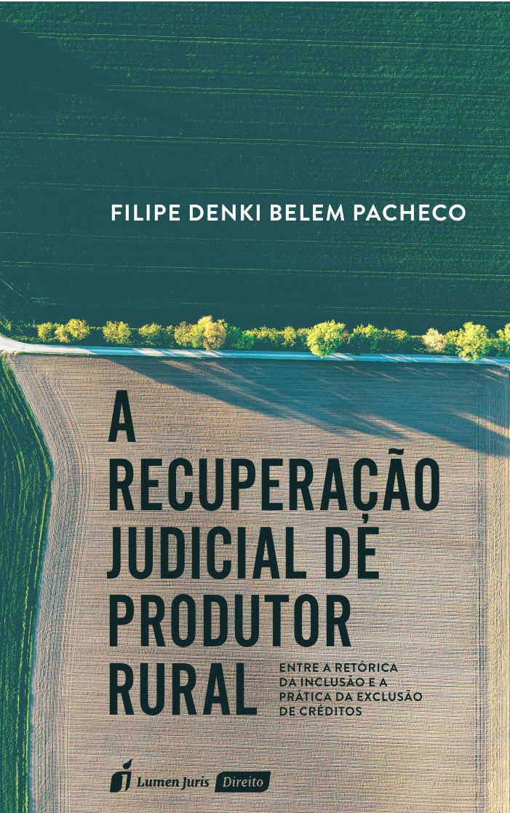

Acervo de artigos, comentários legislativos e textos de pesquisa, com referência bibliográfica e arquivo para leitura.

Lançamento em 23 nov. 2026
A Recuperação Judicial de Produtor Rural
Entre a retórica da inclusão e a prática da exclusão de créditos
Filipe Denki Belem Pacheco | Lumen Juris | 2026
Pesquisa de mestrado em Direito Comercial transformada em obra de referência para profissionais, produtores rurais, formuladores de políticas públicas e legisladores. Analisa as contradições normativas que inviabilizam a recuperação judicial sob as Leis nº 11.101/2005 e nº 14.112/2020 e propõe um microssistema de insolvência rural.
Onde comprar
Site da Lumen Juris | link em breveAmazon | link em breve
Guia em perguntas e respostas para quem está do outro lado da mesa: sinais de crise do cliente, sujeição do crédito, habilitação e classes, plano e assembleia, recuperação extrajudicial, falência e estratégias como cobrar coobrigados e vender o crédito.
Autoria: Filipe Denki | Veículo: STG Law
Palavras-chave: credor; habilitação de crédito; assembleia de credores; cessão de crédito; falência
Mapa jurídico das oportunidades em empresas e ativos em dificuldade (compra de créditos, financiamento DIP, UPIs, conversão de dívida, distressed M&A, dívida de mercado de capitais), com os riscos de cada porta de entrada e um roteiro de due diligence.
Autoria: Filipe Denki | Veículo: STG Law
Palavras-chave: special situations; financiamento DIP; UPI; distressed M&A; due diligence
Para empresários e diretores financeiros: os oito erros que antecedem a crise, diagnóstico e contenção nos primeiros 30 dias, negociação com bancos e a escada de instrumentos, da renegociação privada à recuperação judicial, com 37 perguntas frequentes.
Autoria: Filipe Denki | Veículo: STG Law
Palavras-chave: pré-insolvência; fluxo de caixa de 13 semanas; standstill; mediação; recuperação extrajudicial
Guia para o produtor pessoa física ou empresa rural: sinais de alerta, diagnóstico, alongamento da dívida rural (Súmula 298 do STJ), MP 1.376/2026, negociação coletiva, recuperação extrajudicial e judicial, com 42 perguntas frequentes.
Por que safras recordes não evitam a crise, o diagnóstico exigido pelo Provimento 216/2026 do CNJ, o alcance da MP 1.376/2026, as dívidas excluídas da recuperação judicial, a recuperação extrajudicial como saída e a proposta de um regime próprio de insolvência rural.
Mostra como queda de receita, aumento das dívidas e dependência de crédito sinalizam a necessidade de reestruturar o negócio, e por que adiar a reação reduz as alternativas da empresa.
Autoria: Filipe Denki | Veículo: Congresso em Foco
Examina o pedido de recuperação extrajudicial da Braskem, com dívidas superiores a US$ 10 bilhões, e a tendência de empresas recorrerem ao procedimento extrajudicial como etapa defensiva prévia à insolvência formal, à luz da Lei 14.112/2020.
Autoria: Filipe Denki e Raoni Sales | Veículo: [a informar]
Palavras-chave: recuperação extrajudicial; Braskem; Lei 14.112/2020; reestruturação de dívidas
Analisa o pedido de recuperação judicial da Casas Bahia dois anos após sua recuperação extrajudicial e o que a escalada entre os dois instrumentos revela sobre o momento do varejo brasileiro.
Comenta os R$ 256 bilhões em dívidas do setor agropecuário e a distância entre a inadimplência real, que alcança um quarto do crédito, e os pedidos de recuperação judicial, que envolvem menos de 1% dos produtores.
Guia prático sobre a área de special situations, que conecta empresas em dificuldade, investidores e oportunidades de aquisição de ativos, créditos e participações no mercado de crise.
Autoria: Filipe Denki | Veículo: [a informar]
Palavras-chave: special situations; distressed; reestruturação; investimentos em crise
Analisa a viabilidade de autorizar o produtor rural em recuperação judicial a comercializar grãos vinculados a CPR física, com postergação da garantia para a safra seguinte, como alternativa à tese da essencialidade, majoritariamente afastada pelos tribunais.
Autoria: Filipe Denki Belém Pacheco | Veículo: [a informar]
Mostra que, enquanto o agronegócio ocupa as manchetes, setores urbanos acumulam inadimplência e perdem acesso a crédito, e defende o uso tempestivo dos instrumentos de reestruturação disponíveis.
Autoria: Filipe Denki | Veículo: Agro e Prosa, Debate Jurídico e Rota Jurídica (versão compacta: “Além do agro”)
Examina a tensão entre a inscrição do produtor rural como empresário individual e a restrição da recuperação judicial a dívidas exclusivamente rurais (art. 49, § 6º, da LREF), propondo que bens e dívidas extrarurais não se sujeitem aos efeitos do processo.
Autoria: Filipe Denki Belém Pacheco | Veículo: [a informar]
Palavras-chave: empresário individual rural; universalidade do passivo; patrimônio extrarural; Tema 1.145 do STJ
Sustenta que, se os créditos não rurais ficam fora da recuperação judicial do produtor rural, o patrimônio não rural deve receber tratamento simétrico, inclusive na arrecadação em caso de convolação em falência.
Autoria: Filipe Denki | Veículo: [a informar]
Palavras-chave: produtor rural; créditos exclusivamente rurais; patrimônio não rural; convolação em falência
Parte do recorde de 5.680 empresas em recuperação judicial em 2025 para discutir a crise como teste de governança corporativa e as mudanças de gestão que ela impõe.
Autoria: Filipe Denki | Veículo: [a informar]
Palavras-chave: governança corporativa; recuperação judicial; gestão de crise; reestruturação
Explica o acordo do GPA com credores para um plano de recuperação extrajudicial de cerca de R$ 4,5 bilhões em dívidas sem garantia, seus efeitos imediatos e os requisitos legais de adesão.
Autoria: Filipe Denki | Veículo: [a informar]
Palavras-chave: recuperação extrajudicial; GPA; plano de recuperação; adesão de credores
Analisa a falência do produtor rural pessoa física após o insucesso da recuperação judicial e demonstra que ela é o mecanismo específico de liquidação, absorvendo o que seria a insolvência civil.
Analisa o recorde de pedidos de recuperação judicial no agronegócio em 2025, com alta de 147% no terceiro trimestre, e os fatores que tornam 2026 um ano decisivo para o produtor rural.
Mostra que a inclusão do produtor rural na recuperação judicial convive com a exclusão de boa parte das suas dívidas, como a CPR física e o crédito rural controlado, e propõe um microssistema de insolvência rural inspirado no Chapter 12 norte-americano.
Autoria: Filipe Denki Belém Pacheco | Veículo: PUC/SP — dissertação de mestrado em Direito Comercial (orientação: Marcelo Barbosa Sacramone)
Leitura do recorde de pedidos de recuperação judicial em 2024 e do cenário para 2025, com a recuperação extrajudicial como alternativa diante do desequilíbrio fiscal.
O rombo contábil de R$ 20 bilhões anunciado pela Americanas, o pedido de tutela cautelar antecedente preparatória da recuperação judicial e os instrumentos jurídicos usados nas primeiras semanas do caso.
O uso crescente da mediação após a Lei 14.112/2020, como no caso Samarco, as hipóteses previstas na nova Seção II-A da LREF e os obstáculos que ainda limitam o instituto.
Defende a falência e a autofalência como forma regular de encerrar a atividade, em contraste com o abandono do CNPJ e a dissolução irregular, que leva à responsabilidade pessoal dos sócios por dívidas tributárias (Súmula 435 do STJ).
Balanço do primeiro ano da Lei 14.112/2020: o avanço da mediação e dos CEJUSCs, o financiamento DIP concentrado nas grandes recuperações e as dificuldades que persistem para micro e pequenas empresas.
A derrubada, pelo Congresso Nacional, da maioria dos vetos presidenciais à Lei 14.112/2020 e a atuação técnica do Grupo Permanente de Aperfeiçoamento do Direito de Insolvência (GPAI).
Autoria: Filipe Denki Belém Pacheco | Veículo: Diário de Aparecida
O agravamento da crise no início de 2021, com o fechamento de 3,5 mil lojas em Goiás no ano anterior, e os instrumentos jurídicos disponíveis para as empresas em dificuldade.
Autoria: Filipe Denki Belém Pacheco | Veículo: Diário de Aparecida
Palavras-chave: crise econômica; pandemia; Goiás; recuperação de empresas
A entrada em vigor da Lei 14.112/2020, em 23 de janeiro de 2021, a mais ampla alteração da Lei 11.101/2005 desde sua edição, e o que ela muda para as empresas atingidas pela crise da pandemia.
Autoria: Filipe Denki Belém Pacheco | Veículo: O Estado de S. Paulo e Diário de Aparecida
Palavras-chave: Lei 14.112/2020; reforma da LREF; pandemia
A tramitação acelerada do PL 6.229/2005 em meio à pandemia, no lugar de medidas emergenciais transitórias, e os desafios do curto prazo de 30 dias de vacatio legis da Lei 14.112/2020.
Comentário ao PL 1.397/2020, que previa a suspensão temporária de cobranças, a negociação preventiva e alterações transitórias no regime da recuperação judicial, extrajudicial e falência.
Autoria: Filipe Denki Belém Pacheco | Veículo: Diário de Aparecida
A concessão de recuperação judicial à Unimed Norte-Nordeste, as vedações da Lei 11.101/2005 a operadoras de planos de saúde e o regime de liquidação próprio das cooperativas.
Autoria: Filipe Denki Belém Pacheco | Veículo: Jusbrasil (IEAD)
Palavras-chave: cooperativas; Unimed; operadoras de saúde; recuperação judicial
Os primeiros efeitos econômicos da pandemia no Brasil e as medidas do governo, do Banco Central e do Conselho Monetário Nacional para facilitar a renegociação de dívidas.
Autoria: Filipe Denki Belém Pacheco | Veículo: [a informar]
Palavras-chave: pandemia; economia; renegociação de dívidas
Mostra que mais da metade dos pedidos de recuperação judicial de 2018 veio de micro e pequenas empresas e explica o plano especial previsto nos arts. 70 a 72 da Lei 11.101/2005.
Autoria: Filipe Denki Belém Pacheco | Veículo: [a informar]
Palavras-chave: micro e pequenas empresas; plano especial; recuperação judicial
Examina a desconsideração da personalidade jurídica como instrumento contra o desvio de finalidade e a fraude praticados por meio da pessoa jurídica, reunindo o conceito, a posição da doutrina e a aplicação do instituto no Brasil.
Autoria: Filipe Denki Belém Pacheco | Veículo: PUC Goiás — artigo de conclusão da especialização em Direito Civil e Processo Civil (orientação: Fernando de Paula Gomes Ferreira)
Palavras-chave: pessoa jurídica; desconsideração da personalidade jurídica; desvio de finalidade; abuso da personalidade jurídica; fraude
Percorre a origem histórica da falência e da recuperação judicial, compara a Lei 11.101/2005 com o antigo Decreto-Lei 7.661/45 e analisa os efeitos do processo: suspensão de ações e execuções, execução fiscal, certidões, novação, bens do devedor e extensão aos sócios.
Autoria: Filipe Denki Belém Pacheco | Veículo: PUC Goiás — monografia de graduação em Direito (orientação: Adegmar José Ferreira)